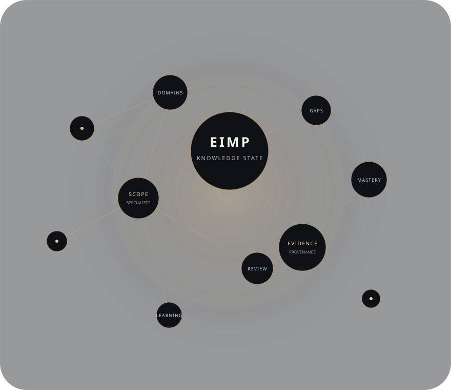

Engineering knowledge · governed as a system
Engineering intelligence with provenance, scope, and explicit knowledge state.
EIMP is a research and development platform for structuring software-engineering knowledge into traceable domains, specialist scopes, evidence-backed research, and progressively governed learning and decision-support foundations.
Research / development build · v0.44.0 snapshot · Stage 08 in progress

What it is
A governed engineering knowledge platform, not a flat document library.
Large technical corpora become difficult to trust when scope, provenance, ownership, dependencies, and review state are mixed together. EIMP is designed to keep those concerns explicit.
The platform organizes engineering knowledge into durable domains and bounded specialist scopes, connects research to evidence, preserves known gaps instead of hiding them, and separates research material from later canonical or independently verified states.
The problem
Technical knowledge fragments faster than teams can govern it.
Documentation, standards, architecture guidance, training material, and research often live in separate systems. That makes it harder to see what is supported, what depends on what, where evidence is missing, and which material is ready for broader use.
EIMP's role
Turn scattered engineering material into a traceable knowledge lifecycle.
EIMP provides a structured foundation for research governance, mastery mapping, assessment design, and future engineering decision-support experiences without treating every collected claim as automatically authoritative.
Core capabilities
Designed for controlled growth of technical knowledge.
These are public, high-level product capabilities. Proprietary implementation details remain outside this website.
Domain & specialist structure
Organizes engineering knowledge into stable responsibility areas and bounded specialist scopes.
Evidence-governed research
Associates research material with source provenance and explicit evidence state rather than hiding uncertainty.
Dependency & mastery mapping
Models prerequisite and relationship structure so learning and engineering context can be reasoned about coherently.
Explicit gaps & handoffs
Represents missing evidence, cross-domain responsibility, and unresolved coverage as visible state.
Controlled knowledge promotion
Separates research, drafting, review, and later verification instead of collapsing them into a single “done” state.
Public / private boundary
Supports public learning projections while keeping internal evidence governance and proprietary implementation separate.
High-level lifecycle
From source context to usable engineering intelligence.
This diagram is intentionally conceptual. It describes the public product idea, not the internal system design.
- 01Source contextStandards, references, prior material
- 02Specialist scopeClear ownership and boundaries
- 03Research stateEvidence-backed, traceable work
- 04Review & promotionSeparate gates for higher assurance
- 05Learning & decisionsFuture mastery and decision-support experiences
Design principles
The system prefers explicit state over implied certainty.
Stable identity
Domains and specialist scopes are treated as durable responsibilities rather than temporary chapter labels.
Research is not canon
Evidence-backed research remains distinct from later canonical drafting and independent technical verification.
Gaps stay visible
Missing evidence is represented as a gap instead of being filled with invented certainty.
Provenance matters
Knowledge state should remain traceable to its source context and review history.
Boundaries are deliberate
Public explanation is separated from proprietary implementation and internal evidence bookkeeping.
Current project status
Research pipeline in progress.
The v0.44.0 repository snapshot is in Stage 08. Research coverage is still expanding, and no specialist is presented publicly as independently verified canon.
- Release snapshot
- v0.44.0
- Program stage
- Stage 08 — in progress
- Canonical draft
- 0 specialists
- Verified canon
- 0 specialists
Repository validation establishes software and data-model coherence for the tested snapshot. It is not a substitute for independent technical verification of research claims.
Where it can matter
Relevant to complex engineering knowledge programs.
Engineering learning
Structured curricula, prerequisite-aware mastery paths, and assessment foundations.
Research governance
Clear separation between evidence gathering, review state, gaps, and promotion.
Technical knowledge operations
A disciplined way to organize large engineering corpora across many specialist scopes.
Decision-support foundations
Structured context that can support future architecture and engineering reasoning experiences.
Public boundary
This website explains the product without publishing the private implementation.
The underlying EIMP core is private and proprietary. This GitHub Pages repository contains only public-facing presentation material and intentionally excludes proprietary source code, internal schemas, private research artifacts, credentials, security configuration, and reconstructive implementation detail.
TheArchitectMax portfolio
One project in a broader software & systems portfolio.
EIMP is an independent project by TheArchitectMax, presented here as a public showcase and high-level documentation layer.